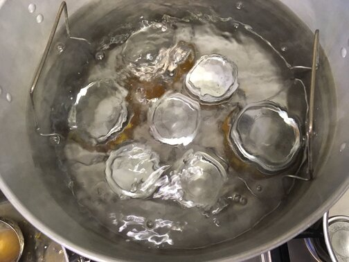

Making It Last
There are a lot of ways to preserve foods for a long period of time, two of the most common are dehydrating and canning. There are two main methods to canning, the first is pressure and the other is water bath canning canning.
Dehydrating is one of the easiest ways to preserve foods. This can be done by purchasing an inexpensive dehydrator, or even in your own oven or out in the sun. The biggest trick to dehydrating anything is heat and airflow.
Pressure canning can be used to can meats or low-acidic vegetables. This canning method uses heat and pressure to kill off any bacteria that maybe in the jars and seals them. This a commonly used method for making jams and jellies.
Water bath canning is as simple as it sounds, just put the food items in a mason jar, put the lid and ring on, and put in the water bath to help sterilize and seal the jars. Unfortunately, water bath canning is not good low-acid foods like carrots; however, there are ways around that. By using vinegar or sometimes citric acid, you are able to get the acidity high enough that it is safe to can your vegetables, this process is called pickling.
